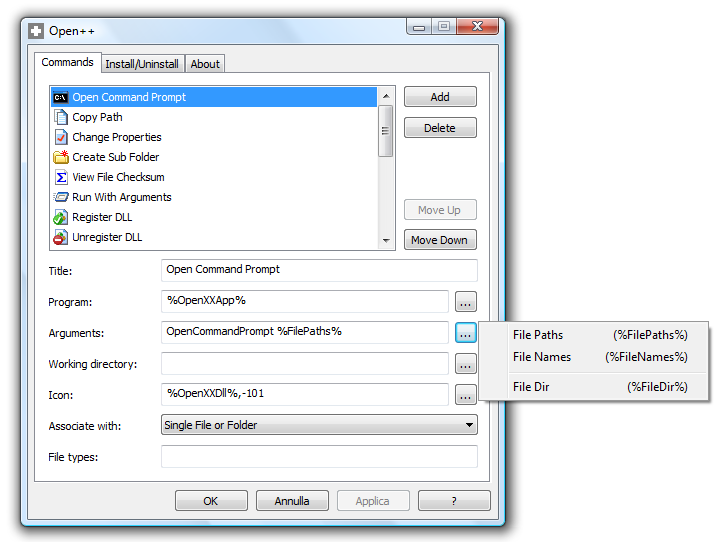
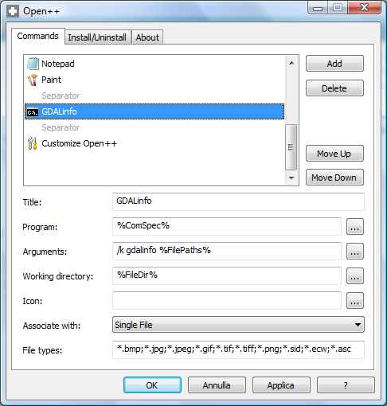
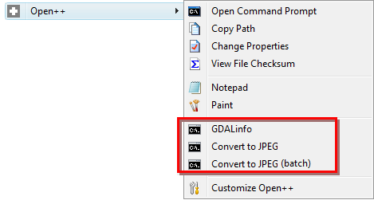

L’uccellino è quello di Twitter, uno dei più famosi servizi di social networking e di microblogging. Nasce nel 2006 e in Italia è diventato uno strumento di massa da poco tempo, ma continua ad essere meno utilizzato e soprattutto meno capito rispetto ad altri servizi concorrenti. Ovviamente sto pensando a Facebook.
E’ un strumento con cui gli utenti pubblicano messaggi di testo (non più lunghi di 140 caratteri) su ciò che sta avvenendo nella loro vita, con link a cose che ritengono interessanti, divertenti o utili; per se stessi e per i follower (l’analogo di quello che in altre piattaforme viene infelicemente definito “amici”). Le persone lo usano in vario modo, come una fonte di news seguendo certi utenti e network di utenti, come chat-room o come piattaforma di (micro)blog. Tutto sommato potrebbe sembrare qualcosa di più di un SMS, ma non è così.
E’ uno degli strumenti di “passaparola” più efficaci sia in termini di numeri, che di sostanza. Ma qui i numeri contano meno, perché anche se hai soltanto 10 follower, il tuo messaggio promozionale, la tua richiesta di aiuto, la tua battaglia politica, potranno raggiungere migliaia e migliaia di utenti. Perché su Twitter segui le persone e non i contenuti, e se un utente che “mi piace” segnala qualcosa, la leggerò con occhi diversi e probabilmente la rilancerò a mia volta, dando vita ad un effetto domino di cui non posso conoscere le dimensioni.
E questo per dire dell’uccellino.
ASITA 2011 è invece la quindicesima Conferenza Nazionale ed EXPO della “Federazione delle Associazioni Scientifiche per le Informazioni Territoriali e Ambientali”. Sulla pagina dedicata all’evento si legge
[...]l’Informazione Geografica rivesta un ruolo di infrastruttura abilitante per tanti settori di intervento pubblico, dall’efficienza energetica alla mobilità, dal monitoraggio ambientale alla comunicazione con i cittadini e alla promozione turistica e quanto le tecnologie geomatiche possano contribuire alla realizzazione di servizi innovativi a partire dal primo livello di governo costituito dai Comuni italiani.[...]
Questi temi ci sembravano (e ci sembrano) importanti e per questo con Pietro Blu e Sergio abbiamo discusso sull’idea di utilizzare il web per dare voce all’evento, per farlo vivere sul web, per creare uno spazio virtuale di incontro e confronto sui temi delle varie giornate.
Twitter c’è sembrato lo strumento più giusto, ma non ci siamo inventati nulla, anzi abbiamo provato a mettere in pratica e sperimentare quello che si fa in tutto il mondo: scegliere un hashtag, farlo conoscere, sperare che venga utilizzato ed alimentarlo un po’.
L’hashtag è un’etichetta che si può utilizzare per contrassegnare parole chiave in un Tweet, in modo da poterli organizzare e raggruppare. Gli hashtag sono preceduti dal simbolo “#” e possono essere inseriti in qualsiasi parte di un messaggio. Ogni etichetta verrà trasformata in un collegamento ad una pagina che raggruppa gli ultimi Tweet che la contengono, e potrà anche essere usata per fare ricerche tra tutti i post pubblicati su Twitter.
Un esempio pratico, triste ed attuale e quello #tahrir: si tratta dell’hashtag scelto dalla rete, per ciò che sta avvenendo in Egitto. Un altro più leggero è #sopravvalutati.
Per ASITA 2011, non siamo stati particolarmente creativi, abbiamo scelto #ASITA11. Un hashtag non è in realtà scelto da nessuno, perché non basta trovare la parola giusta; è necessario, come dicevo sopra, che si instauri una piccola reazione catena, e non è detto che avvenga. In questo caso siamo partiti da qui, e poi “poco poco, piano piano” la cosa è cresciuta. Niente di imponente, ma seguirne l’evoluzione e la crescita è stato divertente e didattico.
I primi giorni sono stati un po’ fiacchi e per un po’ abbiamo pensato che non sarebbe partita nessuna reazione a catena. Dopo i primi due, a manifestazione ancora ferma, la cosa ha iniziato a prendere vita, con 25 Tweet il primo giorno. La punta si è raggiunta il penultimo giorno con 85 messaggi, sia perché il “passaparola” cresceva, sia perché coincide spesso con il giorno con più presenze.
Tutti i Tweet sono accessibili online, tramite Twitter. Per comodità di chi legge, li ho comunque pubblicati qui. In corrispondenza dell’id del messaggio ho inserito un collegamento ipertestuale che consente di accedere al messaggio originale. Ci sono anche gli aggregati da cui ho ricavato i due grafici di sopra.
In questa settima di osservazione ho notato alcuni elementi interessanti:
utenti che non usavano Twitter da diversi mesi – vedi Sergio – hanno ripreso ad utilizzarlo per l’occasione, e sembra abbiano preso voglia di continuare a farlo
aziende come la mia, che nemmeno avevano un account, l’hanno creato in questa settimana. Questo il minimale debutto
una rivista del settore, che sino ad #ASITA11 non aveva quasi mai usato un hashtag su twitter, lo ha iniziato a fare intensamente, contribuendo non poco all’effetto domino
chi, come me, non era presente a Parma ha potuto seguire un po’ della manifestazione
per alcuni è stato un modo per conoscersi un po’ meglio, per farsi compagnia e magari due risate
ci si è confrontati su alcuni temi anche in modo netto
è stato lo strumento usato per fare da “moltiplica” ad alcune voci critiche, che si sono espresse in rete (qui e qui)
Si tratta di uno strumento poco conosciuto ed intrinsecamente non controllabile. Probabilmente quando gli organizzatori della manifestazione guarderanno il risultato di questo test, proporranno di replicarlo ufficialmente per l’anno venturo e con il giusto supporto organizzativo.
Non ero presente in situ, ma il tema del web 2.0 (Twitter è uno dei mille esempi) e quello dell’open (non solo source), sono sembrati abbastanza laterali e lontani da ASITA. L’informazione geografica, non ne può più fare a meno.
L’accesso ai dati, ai dati “grezzi”, è stato una chiave di volta. Senza poter scaricare le informazioni su tutti i cinguettii, non sarei riuscito a scrivere questo post: sono stati ispiratori e propedeutici per la creazione di alcuni degli “oggetti” creati per l’occasione. L’accesso ai dati consente potenzialmente agli utenti di sviluppare superpoteri, e per questo deve essere sempre di più un tema soprattutto politico. Per fortuna sembra che stia accadendo.
Ho provato a raccontare tutto questo in modo visuale, cercando ove possibile di mantenere sempre coerente il filo temporale. Qui sotto il risultato, che potrete pure vedere a schermo intero (VE LO CONSIGLIO!).
In ultimo ringrazio Pietro Blu Giandonato, per avere contribuito a realizzare tutto questo. Buona visione.
Letture consigliate (la prima è per me straordinaria):
Unce upon a time there was a hot summer and dark room. And there was a lazy nerdy Sunday morning. I remember quite well that weekend.
The time was up to try to develop something on Android. In the past I had tried to develop applications on Zaurus, on Dell Axim, on some Nokia smartphone, but the results had been disappointing every time. There had to be something easier, where one could throw his ideas and make simple applications out of it… in one weekend.
The nerdy Sunday, wakeup call at 6, checking emails with coffe’ and cookies, seemed to be inspiring. A couple of days before an email had arrived about a new book, available in “review-reading” mode as pdf version: Unlocking Android, a developer’s guide by Ableson et alter. I decided to give it a possibility.
Well, I found the book so easy to read through, that I gave the first application a try. I really wanted to create a lightweight application that would help out in field surveys and would have those features, that the tablet pc field mapping application didn’t have. Above all the possibility to record the orientation of the pictures taken during the survey, so that they would show the direction of the snapshot when imported on a map. And I really liked the idea of having a mapping device always in my pocket. The motto has always been: “Gather as much information as you can. Always. The GIS will then help you to sort it out.”
That Sunday experiment went way better than I had ever hoped, by the evening I had great satisfaction with my simple, new and most of all GPS logging application. It was already able to take text notes and track lines. I got really excited about the possibilities to create a small version of BeeGIS… well, at that point I knew the time was up for Geopaparazzi.
From that moment on things went quite smooth. We started developing a simple OpenStreetMap based view, we created an import tool for Geopaparazzi in BeeGIS. We were using it in our daily job, and that was simply awesome. As we usually do at HydroloGIS we open sourced the application and published it on the market, in the hope that people would buy it and through that act support our other open source projects: JGrasstools, JGrass, BeeGIS and uDig.
The compass tracks the picture shooting direction, when the user keeps the phone in "taking picture" mode.
which, once imported into BeeGIS, would result in geonotes containing the picture and showing through a small arrow the direction in which the photo had been taken:
Geopaparazzi survey data imported into BeeGIS. The small arrows show the direction of the snapshot, the note itself contains the image.
As time passes by and as open source software works, one starts to exploit components other teams are specialized in.
So at some point Geopaparazzi decided to remove the compass view to present the much more user friendly dashboard. The android system makes it very easy to call views from other applications. geopaparazzi therefore chose to present a compass button that calls the compass view from the Status GPS project, which is freely available in the market.
The Status GPS compass view
At that point Geopaparazzi 2 was released, which brought a new, more userfriendly dashboard view:
From the beginning Geopaparazzi only wanted to deal with data collection, which is why with the time the possibilities to describe the data to collect were enhanced. The new form based tags were introduces, through which it is possible to describe the data structure as forms that appear as tag buttons:
The form file description is loaded as a set of buttons that call the actual form
Once the button is pushed, the form is generated from a user created description:
A form, generated on the fly from a user defined text
Geopaparazzi 2 also brought the integration with the osmdroid project, a project that supplies a map view that caches OSM map tiles that can be accessed also in offline mode. This gave the possibility to enhance a bit the usability of the map view, also adding the bookmarks facility:
The osmdroid based map view, with Geopaparazzi's measure tool, bookmarks and notes tools
That more or less brings us to where we are now. Some interest has grown around Geopaparazzi and that makes us very happy.
The Osaka Water General Service together with the Osaka University has adapted it to use it for the collection of information about water-supply infrastructure to promote post-disaster recovery for water supply under the guidance of Venkatesh Raghavan.
The Japanese localized Geopaparazzi adaption used in the Disaster Management Information System of the city of Osaka
We worked on a customized version of Geopaparazzi to keep waste management information uptodate. Through the trashmapper it is possible to sample and update information out in the field and then syncronize the data with a central database/webgis.
Since in this project the new generation tablets are being used, we got to tweak it for better user experience on tablet screens:
The TrashMapper application that helps collecting data about waste management
Arrived to that point, it was about time to move to the next level. Geopaparazzi has always been a free and open source application. It was sold in the android market but the code has always been accessible. What we want to achieve now that it is a stable product, is to attract some developers to cooperate on the project and enhance its functionalities. That is why from today on Geopaparazzi can be found in the market for free. From today on it is not only free as in speech, but also as in beer.
A few final considerations: the new generation tablets are more or less like pcs and maybe the idea to avoid too much mapping capabilities in Geopaparazzi might be a decision that it is time to review. Maybe instead it is time Geopaparazzi starts to slowly take over the job of old and heavy BeeGIS, with new data and connectivity functionalties and mapping capabilities. The doors are open, even if the main paradigma has to be kept strickt in mind: the tools needs to stay as simple and usable as possible. If you are interested to contribute, feel free to stop by at our mailinglist and have a chat with us. If you want to try it out, simply access the market and search for geopaparazzi.
I nostri più assidui lettori sicuramente ricorderanno un “vecchio” post di Andrea Borruso dal titolo“Il tasto destro per alleggerire un po’ il lavoro di chi si occupa di GIS (su Windows e su Linux)”, un evergreen del nostro blog tra i più visitati di sempre. Ebbene, in accordo con la postilla che scriviamo in calce ai nostri post dopo un anno dalla loro pubblicazione (ci teniamo a ricordarlo!), il post di Andrea, pur sempre attualissimo, merita un aggiornamento in virtù del fatto che il software Open++ da lui brillantemente recensito ha subito di recente alcune evoluzioni significative tali da rendere inefficaci le istruzioni scritte all’epoca (…ben due anni e mezzo fa!).
In particolare, Andrea ci mostrava come configurare Open++ in modo da “automatizzare” l’utilizzo di alcune utility dello swiss knife geospaziale per eccellenza: la libreria GDAL. Cercheremo pertanto di ottenere lo stesso risultato di allora, utilizzando stavolta l’ultima release di Open++ (v. 1.5.1).
Partiamo innanzitutto dal notare che la struttura della finestra di dialogo di Open++ è leggermente cambiata rispetto al passato. In luogo della scheda Language, ora ne sono presenti altre due: Install/Uninstall e About. Tralasciando l’ovvio significato di quest’ultima, la scheda Install/Uninstall è stata introdotta in sostituzione del vecchio installer, rendendo quindi l’applicazione portabile (può essere eseguita su una semplice chiavetta USB). La scheda principale (Commands) è apparentemente rimasta invariata rispetto al passato. Tuttavia, come ci fa notare Chiara (una lettrice che di recente ha commentato il post di Andrea, sollevando il problema), qualcosa è cambiato nella versione 1.5.1 (probabilmente anche prima): si tratta essenzialmente delle variabili utilizzabili nella casella di testo in cui andiamo a configurare i nostri comandi e, in particolare, quella degli argomenti (Arguments), come mostrato nella figura seguente.

Tali variabili, per quanto siano di una chiarezza quasi disarmante, risultano però meno flessibili da gestire rispetto alle versioni precedenti specie quando, come nel caso delle utility della libreria GDAL, il nostro comando accetta due o più parametri basati sul nome del file in ingresso. Fortunatamente, ci viene in soccorso l’unica FAQ presente nell’help file di Open++ (abbastanza criptico, in verità…) in cui è mostrato l’utilizzo di un ciclo for in linguaggio batch all’interno degli argomenti. Dunque, se è possibile usare il linguaggio batch, è altrettanto possibile usare anche i parametri batch e trarne così beneficio nel gestire i nomi dei file con o senza le loro estensioni. Ovviamente un ciclo for è applicabile anche su un singolo file e quindi il gioco è fatto!
Andando al sodo, per prima cosa consiglio di aggiungere la cartella dei binari di GDAL (o di FWTools, se preferite) all’interno della variabile PATH di sistema. Così potrete facilmente eseguire qualsiasi tool di GDAL all’interno di una qualsivoglia cartella, senza la necessità di dover riscrivere il suo percorso. In questo altro post sempre di Andrea (lo “swiss knife” di TANTO ) è descritto come fare. Nel seguito, assumerò che lo abbiate fatto.
Quindi aggiungiamo un separatore delle opzioni di menù nella scheda Commands di Open++ e proviamo a configurare l’utility relativamente più semplice tra quelle trattate da Andrea: gdalinfo. Per prima cosa, scriviamo “GDALinfo” come titolo. Poi, trattandosi di una utility che si esegue da riga di comando, il programma da utilizzare sarà %ComSpec%, ovvero il nome della variabile di ambiente usata da Windows per indicare l’interprete da linea di comando (CLI), solitamente cmd.exe. Fin qui nulla di nuovo rispetto al post di Andrea. Negli argomenti, invece, scriveremo:
/k gdalinfo %FilePaths%
La spiegazione è piuttosto semplice: /k significa che vogliamo mantenere la finestra aperta dopo l’esecuzione del comando (altrimenti non riusciremmo a leggere le informazioni), gdalinfo è il nome dell’eseguibile dell’utility e, quindi, %FilePaths% è una variabile che rappresenta il vettore dei percorsi dei file passati come parametro. La directory di lavoro coincide con la directory del file stesso (%FileDir%), scegliamo eventualmente un’icona per rappresentare il comando, associamo il comando al singolo file e, infine, esplicitiamo le estensioni possibili del file in ingresso. Nulla di trascendentale, verrebbe da pensare.

Le cose si complicano, invece, quando andiamo a mettere in pratica l’esempio di Andrea relativo a gdal_translate. La procedura è sostanzialmente identica al caso precedente, ad eccezione dell’argomento. Tuttavia, come anticipavo in precedenza, ci viene ottimamente in soccorso l’unica FAQ a disposizione. E, pertanto, l’argomento da scrivere per convertire in formato JPEG sarà:
/c for %i in (%FilePaths%) do start gdal_translate -of JPEG %~nxi %~ni.jpg
che, in pratica, significa che per tutti i file contenuti nel vettore dei percorsi %FilePaths% (nel nostro caso, contiene un unico percorso in quanto selezioneremo un unico file) esegue il comando gdal_translate -of JPEG %~nxi %~ni.jpg, dove %~nxi è il nome compreso di estensione del raster sorgente, mentre %~ni è il nome privo di estensione del raster di destinazione, seguito poi da .jpg.
E non è ancora tutto! Visto che usiamo un ciclo for come argomento e che Open++ prevede l’associazione dei suoi comandi anche ad un insieme di file, possiamo quindi rendere la conversione in JPEG in modalità batch. A tal fine, creeremo sostanzialmente una copia del Convert to JPEG in cui aggiungeremo solo il termine (batch) alla fine del titolo e poi cambieremo l’opzione Associate with da Single File a Multiple File. Possiamo quindi selezionare più file raster e da menù contestuale scegliere l’opzione Convert to JPEG (batch) per avere la conversione in blocco di tutti i file selezionati. E’ quindi adesso facile definire altri comandi di conversione verso altri formati raster supportati da GDAL …e non solo!

Per i più pigri, ecco il file di configurazione OpenXX.ini dei comandi descritti in precedenza. Basta copiarlo nella cartella contenente Open++, eseguirlo …et voilà …si otterrà la stessa identica configurazione. Si tratta di un metodo semplice e rapido per condividere le proprie raccolte di comandi con i colleghi.
Una nota a margine: in caso si decida di definire comandi per effettuare operazioni di coordinate, occorre aggiungere alla variabile PATH di sistema anche il percorso della cartella di GDAL (o eventualmente della libreria proj.4) che contiene le definizioni dei vari sistemi cartografici definiti da EPSG.
Infine, un grosso ringraziamento a Chiara per averci costretti a rivalutare un post obsoleto.
In un dopocena di un po’ di tempo fa, speso in letture web su python e gdal, ho “guardato” un po’ dentro l’archivio di Google code, ed in particolare tra i progetti etichettati con “gdal”. Sono soltanto 17 e tra questi l’occhio mi è “caduto” su MetaGETA: Metadata Gathering, Extraction and Transformation Application.
Si tratta di un’applicazione scritta in python, per estrarre e raccogliere metadati da dataset raster spaziali, in uno di questi formati:
Generic format (che legge tutti i formati “classici” di GDAL, incluso GDAL Virtual Raster)
EO1 ALI (L1G & L1R) e Hyperion (L1R)
ACRES ALOS AVNIR-2/PRISM/PALSAR
ASTER
ACRES Landsat CCRS/SPOT 1-4
Digital Globe
ECW
ECWP
ENVI
ESRI Bil
ESRI GRIDs
ACRES Landsat FastL7A
JPEG2000
Landsat geotiff
NetCDF
NITF
SPOT 1-4
SPOT DIMAP
La scelta è molto ampia, con formati “generici” ed altri “specializzati” tipici del mondo del remote sensing. L’architettura a plugin dell’applicazione consente comunque di aggiungere facilmente nuovi driver di lettura di metadati.
E’ uno strumento di grande utilità, perché l’estrazione di metadati strutturati consente di conoscere meglio le proprie basi dati e di dargli quindi più valore.
Si tratta di un software opensource multipiattaforma, installabile da codice sorgente e nel caso di Windows anche tramite un installer. Io ho testato soltanto quest’ultima versione.
Il lancio si esegue (anche) da riga di comando con questa sintassi tipo:
>runcrawler.bat/sh arguments
Se non vengono forniti argomenti sufficienti, si aprirà la finestra di dialogo sottostante, in cui è possibile scegliere il percorso da analizzare, quello del file di output del processo, ed altre opzioni (tra cui quella di cercare anche nelle sottocartelle).
Gli output sono:
un file .xls con i metadati raccolti
la generazione (opzionale) di un’immagine di anteprima e di un thumbnail per ogni immagine dell’archivio
un quadro d’unione in formato ESRI Shapefile in coordinate geografiche (ma EPSG:4283, perché gli sviluppatori sono australiani, e gli piacciono i codici EPSG del paese loro), con in il bounding box di ogni immagine associato ai relativi metadati
Se volete un’idea dei contenuti del file .xls di output, potete fare click qui: le coordinate del bounding box, la risoluzione, il sistema di coordinate, il datatype, il tipo di compressione, le dimensioni, il numero di bande, ecc.. Ma ci sono anche campi tipici (come detto sopra) del remote sensing.
Ho invece pubblicato su GeoCommons uno shapefile di output di esempio. E’ il classico layer poligonale costituito dai bounding box degli strati informativi processati – analogo a quello di output di gdaltindex – arricchito dai metadati “intercettati” da MetaGETA.
Aggiunti nuovi file nel proprio archivio (e dopo un”eventuale rimozione di vecchi), possono essere eseguite nuove operazioni di indicizzazione che aggiorneranno i record del file .xls . Questo può essere facilmente convertito in XML secondo lo schema ANZLIC Profile (ISO 19139) e caricato ad esempio su GeoNetwork. E’ ancora una volta possibile personalizzare il processo, modificare lo schema di esportazione ed aggiungere anche nuovi campi.
MetaGETA però non fa miracoli e potrà estrarre soltanto i metadati associati ai vostri dati; in presenza di una “povera” coppia tif/tfw, non sarà in grado di determinarne il sistema di coordinate. Io l’ho trovato molto utile anche per questo: mi ha fatto scoprire diverse “falle” di alcune mie basi dati, ed evidenziato ancora una volta il grande valore del corredo informativo dei dati spaziali. Buon crawling!
Scopo del presente post è presentare un formidabile linguaggio di scripting, in cui io e Giovanni Allegri ci siamo imbattuti da un po’ di tempo a questa parte, che presenta delle potenzialità davvero eccezionali nel processamento di dati geospaziali. Il pretesto occasionale che ha riacceso il nostro sopito interesse nei confronti di JEQL é un recente post del blog Lin.ear Th.inking, Visualizing geodetic information with JEQL, in cui l’autore Martin Davis (aka “Dr JTS”, l’attuale designer e lead developer della fantastica libreria JTS …e non solo!) introduce delle nuove funzioni geodetiche di calcolo sulle geometrie all’interno di JTS, illustrandone l’utilizzo mediante un’applicazione in JEQL che ripercorreremo nel seguito.
Cos’è JEQL?
JEQL è un Query Language sviluppato in Java, dove la “E” può assumere i seguenti significati:
Extended, poiché implementa un numero sempre crescente di estensioni che lo rende più potente nel processamento dei dati rispetto alle tante versioni e dialetti SQL esistenti;
Embeddable, in quanto il motore di JEQL può essere integrato all’interno di altre applicazioni, in modo da essere utilizzato come query language per modelli di dati tabellari;
Efficient, dato che garantisce velocità di sviluppo ed esecuzione.
JEQL è dunque un linguaggio di scripting che consente il processamento di strutture di dati tabellari, compresi quelli geografici vettoriali. Fin qui nulla di nuovo, probabilmente penseranno i lettori esperti dei possenti RDBMS con estensione spaziale (PostgreSQL + PostGIS, Oracle Spatial, MySQL, ecc.) o del più leggero e, al tempo stesso, molto versatile SpatiaLite. Analogamente a quest’ultimo, JEQL non richiede l’installazione di un server database e ciò, assieme al fatto che è un linguaggio di scripting, rappresenta un grosso vantaggio in termini di portabilità. Si pensi ad esempio alla replicazione della configurazione di un DBMS a distanza di parecchio tempo oppure alla condivisione di uno script con un nostro collega. Inoltre, anche la velocità di sviluppo e di esecuzione rappresentano dei non trascurabili punti di forza. Naturalmente, esistono anche dei task non coperti da JEQL per i quali un RDBMS è insuperabile. Quali tipi di dati è in grado di utilizzare? Oltre ai classici tipi Java (interi, stringhe, double) e le date, JEQL supporta anche le geometrie JTS e un vasto repertorio in continua crescita di funzioni spaziali, costruttori di predicati e funzioni di aggregazione, che lo rendono uno strumento particolarmente adatto per il processamento di dataset spaziali. Inoltre, è in grado di accedere in lettura e scrittura a diversi formati di dati (CSV, DBF, SHP, KML) e database compatibili con JDBC (Java Data Base Connectivity). L’installazione di JEQL è molto semplice: nei sistemi operativi Windows, basta scompattare il pacchetto di installazione (è appena stata rilasciata la versione 0.9) in una cartella con percorso non contenente spazi ([JEQL_HOME]) ed aggiungere nella variabile PATH di sistema il percorso [JEQL_HOME]\bin. Manca, tuttavia, uno script shell o qualcosa di analogo per Linux, che tuttavia non dovrebbe essere difficile da produrre. L’apprendimento del linguaggio JEQL è abbastanza rapido, soprattutto per chi possiede già dei rudimenti di SQL, ed è facilitato dall’interprete che guida l’utente nell’individuazione e nella correzione degli errori. Il pacchetto di installazione è inoltre corredato da una lista di unit test, ovvero gli stessi esempi basilari utilizzati in fase di collaudo del codice. La documentazione rappresenta invece una delle poche note dolenti, essendo ancora un work in progress, nonostante la presenza di alcuni illuminanti esempi applicativi, diversi post su Lin.ear Th.inking e una mailing list dedicata, oltre alla indiscutibile cortesia e competenza dello sviluppatore.
Attualmente JEQL è rilasciato con doppia licenza: freeware e “commerciale”. Quest’ultima per consentirne l’integrazione all’interno di software commerciali (…e in quelli open source?).
Un esempio applicativo: worldAirRoutes.jql
Nel seguito, si cercherà di fornire un saggio delle potenzialità di JEQL, proponendoci le stesse finalità del post citato in precedenza, ovvero disegnare le rotte aeree a scala globale secondo linee ortodromiche, piuttosto che linee rette, con tutti gli accorgimenti del caso al fine di ottenere una buona resa grafica. Ci cimenteremo passo dopo passo con le fasi di importazione e normalizzazione dei dati di interesse fino al raggiungimento dello scopo. I dati utilizzati nell’applicazione sono:
In particolare, i primi due sono parte degli open data del progetto OpenFlights, rilasciati con Open Database License (Odbl), mentre lo shapefile semplificato dei world borders (a proposito della loro qualità, si consiglia la lettura di questo post e successivi) è rilasciato da thematicmapping.org con licenza Creative Commons CC-SA.
Dopo aver installato JEQL 0.9, creiamo una cartella, vi collochiamo i dati appena scaricati (scompattando naturalmente lo zip file) e vi definiamo inoltre un semplice file di testo (worldAirRoutes.jql) nel quale andremo a scrivere il nostro codice.
Il primo passo dell’applicazione consiste nell’importazione dei dati relativi agli aeroporti (airport.dat), tenendo presente che i file .dat in esame sono in formato CSV:
// Read data from CSV
CSVReader airports file: "airports.dat";
numAirports = select count(*) from airports;
Print "Number of airports to clean: " + val(numAirports);
Print airports limit: 10;
Salviamo lo script, apriamo il prompt dei comandi e collochiamoci nella directory che lo contiene. Per eseguirlo occorre digitare jeql worldAirRoutes.jql e premere il tasto Invio. Successivamente, nel prompt dei comandi comparirà qualcosa del genere:
Number of airports to clean: 6344
col1:String, col2:String, col3:String, col4:String, col5:String, col6:String, col7:String, col8:String, col9:String, col10:String, col11:String
1 Goroka Goroka Papua New Guinea GKA AYGA -6.081689 145.391881 5282 10 U
2 Madang Madang Papua New Guinea MAG AYMD -5.207083 145.7887 20 10 U
3 Mount Hagen Mount Hagen Papua New Guinea HGU AYMH -5.826789 144.295861 5388 10 U
...
La prima cosa che scopriamo è che le colonne della tabella “airports” sono identificate come “col1, col2 … colN”, sebbene il file CSV sia sprovvisto delle relative intestazioni dei campi (per la descrizione dei quali si rimanda a questa pagina), e che i campi sono considerati tutti di tipo String. Procediamo quindi con la normalizzazione dei dati degli aeroporti, selezionando i dati di nostro interesse:
// Select airports data with valid IATA airport code
airports2 = select
col2 as name,
col3 as city,
col4 as country,
col5 as code,
col7 as lat,
col8 as lon
from airports
where RegEx.matches(col5,'[A-Z]{3}');
E’ interessante notare che:
per definire gli alias dei campi di una tabella è utilizzata la parola chiave as, così come avviene solitamente in molte versioni di SQL, tuttavia si tenga presente che in JEQL il suo uso è a discrezione dell’utente;
nella clausola where è utilizzata la funzione RegEx.matches (campo, espressione regolare) in modo da selezionare mediante una semplice espressione regolare tutti e soli gli aeroporti con codice IATA composto da tre lettere maiuscole, in base allo standard ufficiale dell’International Air Transport Association (IATA).
Occorre, inoltre, verificare la presenza di eventuali codici IATA duplicati, in modo da essere certi dell’univocità del campo “code”, al fine di utilizzarlo poi come chiave esterna nelle operazioni di join con la tabella delle rotte aeree (routes.dat), come si vedrà nel seguito.
// Find duplicate IATA airport codes in airports data
duplicateCodes = select *
from (select code, count(code) as numOccurrences
from airports2
group by code) as duplicates
where numOccurrences > 1;
Print duplicateCodes;
A fronte di tale verifica, si riscontra un unico codice duplicato (“TCG”). Avvalendoci dell’ausilio della banca dati ufficiale è possibile risolvere tale ambiguità, scartando l’aeroporto di Tocache (Cina) al quale è stato erroneamente attribuito questo codice. A tal fine, la clausola where della prima select diventa:
where RegEx.matches(col5,'[A-Z]{3}')
and col3!="Tocache";
E’ dunque possibile commentare il codice relativo alla ricerca dei duplicati (“//” commenta una singola riga, mentre “/* … */” tutto il codice tra essi compreso – non a caso, come nel linguaggio Java) e verificare la bontà dei risultati fin qui ottenuti, visualizzando eventualmente i primi dieci record della tabella “airports2”.
// Check intermediate results
numAirports2 = select count(*) from airports2;
Print "Number of airports without duplicates: " + val(numAirports2);
Omettendo per brevità la visualizzazione del contenuto delle tabelle, otteniamo:
Number of airports without duplicates: 5023
Successivamente, si procede all’importazione e normalizzazione dei dati relativi alle rotte aeree (routes.dat). In particolare, selezioniamo i codici IATA degli aeroporti di origine e destinazione relativi a ciascuna rotta aerea, e li combiniamo in un’unica stringa in modo da poter escludere le rotte duplicate mediante l’operazione di raggruppamento (group by). Da queste stringhe è poi possibile recuperare nuovamente i codici dai quali sono stati ottenuti. Inoltre, definiamo una chiave primaria “rid” tramite la funzione rownum() che restituisce il numero di riga.
// Read data from CSV
CSVReader routes file: "routes.dat";
numRoutes = select count(*) from routes;
Print "Number of routes to clean: " + val(numRoutes);
// Select routes data removing duplicates
routes2 = select
rownum() as rid,
String.substring(routeCode, 0, 3) as fromCode,
String.substring(routeCode, 3, 6) as toCode
from (select
//col3 as fromCode,
//col5 as toCode,
col3+col5 as routeCode
from routes
order by routeCode asc) as routesWithDuplicates
group by routeCode;
// Check intermediate results
numRoutes2 = select count(*) from routes2;
Print "Number of routes without duplicates: " + val(numRoutes2);
ottenendo:
Number of routes to clean: 64114
Number of routes without duplicates: 36004
Il task successivo consiste nell’associare ad ogni rotta aerea le coordinate dell’aeroporto di partenza e di quello di destinazione, scartando le coordinate con valore null e validando quelle che non lo sono, facendo ancora una volta ricorso alle espressioni regolari.
// Extract origin airport data
fromAirport = select
rid,
fromCode,
name as fromName,
city as fromCity,
country as fromCountry,
lat as fromLat,
lon as fromLon
from routes2
left outer join airports2
on routes2.fromCode == airports2.code;
// Extract destination airport data
toAirport = select
rid,
toCode,
name as toName,
city as toCity,
country as toCountry,
lat as toLat,
lon as toLon
from routes2
left outer join airports2
on routes2.toCode == airports2.code;
// Join the last two tables (removing records with null coords)
troute = select fromAirport.*, toAirport.* except rid
from fromAirport
join toAirport
on fromAirport.rid==toAirport.rid
where not Val.isNull(fromLat) and not Val.isNull(fromLon) and not Val.isNull(toLat) and not Val.isNull(toLon);
// Check if coords are valid
troute2 = select *
from troute
where RegEx.matches(fromLat,'-?((([0-9]|[1-8][0-9])(\.[0-9]*)?)|(90))')
and RegEx.matches(fromLon,'-?((([0-9]|[1-9][0-9]|1[0-7][0-9])(\.[0-9]*)?)|(180))')
and RegEx.matches(toLat,'-?((([0-9]|[1-8][0-9])(\.[0-9]*)?)|(90))')
and RegEx.matches(toLon,'-?((([0-9]|[1-9][0-9]|1[0-7][0-9])(\.[0-9]*)?)|(180))');
// Check intermediate result
numRoutes3 = select count(*) from troute2;
Print "Number of routes without duplicates and with valid coords: " + val(numRoutes3);
che ci restituisce:
Number of routes without duplicates and with valid coords: 35475
Un altro aspetto degno di nota è l’utilizzo della parola chiave except nella select della tabella “troute”. Si tratta di un’estensione solitamente assente nei vari linguaggi SQL che ci consente di selezionare tutti i campi di una particolare tabella ad eccezione di un campo.
Infine, selezioniamo i dati da cui poter derivare le geometrie delle rotte aeree e rappresentarle graficamente (da qui in poi, il codice è quello del Dr JTS con qualche piccolo adattamento):
// Convert coords from string to double
trte = select fromCity, toCity,
Val.toDouble(fromLon) fromLon, Val.toDouble(fromLat) fromLat,
Val.toDouble(toLon) toLon, Val.toDouble(toLat) toLat
from troute2;
// Split geodetic arcs and calculate lengths
tlines = select fromCity, toCity, line, len
with {
line = Geodetic.split180(Geodetic.arc(fromLon, fromLat, toLon, toLat, 2));
len = Geom.length(line);
}
from trte order by len desc;
// Interpolate line color and fix line width
tplot = select line,
Color.interpolate("ffffff", "00aacc", "0000ff", len / 50.0 ) lineColor,
0.2 lineWidth
from tlines;
// Import shapefile data
ShapefileReader tworld file: "TM_WORLD_BORDERS_SIMPL-0.3.shp";
// Select geometries and define line and fill colors
tworldLine = select GEOMETRY, "222222" lineColor from tworld;
tworldFill = select GEOMETRY, "333333" fillColor from tworld;
// Plot routes with world landmasses
width = 1800;
Plot width: width height: width / 2
extent: LINESTRING(-180 -90, 180 90)
data: tworldFill
data: tplot
data: tworldLine
file: "routes.png";
// Plot routes without world landmasses
Plot width: width height: width / 2
extent: LINESTRING(-180 -90, 180 90)
data: tplot
file: "routes_only.png";
Qui è possibile effettuare il download dell’intero script. Infine, si mostrano le due immagini risultanti in cui sono rappresentate le rotte aeree rispettivamente con e senza i world borders. In particolare, le rotte sono disegnate in ordine di lunghezza decrescente, utilizzando un colore interpolato in base alla lunghezza, per cui spiccano le rotte più brevi con colore più chiaro. Anche nella seconda immagine, è possibile rilevare con buona approssimazione i limiti di molte terre emerse.
Come giustamente afferma Martin Davis, dalla densità delle rotte aeree che si percepisce nelle immagini si evince come agli europei piaccia molto volare. Ma neanche quelli delle East Coast scherzano!
Conclusioni
L’esempio applicativo appena mostrato esprime già molte delle potenzialità offerte da JEQL, e i comandi attualmente disponibili sono molto numerosi (basta digitare jeql -man per scoprirlo!). JEQL offre inoltre anche la possibilità di estendere le sue funzionalità tramite un’interfaccia di programmazione (API), non ancora documentata, tramite la quale creare nuovi comandi e funzioni da poter utilizzare all’interno dei nostri script. Non nascondiamo la speranza, in parte malcelata dallo stesso Martin Davis, che un domani si possa usufruire di una doppia licenza open source/commerciale, che permetta di contribuire alla crescita della libreria con nuovi plugin e una migliore documentazione di tutte le caratteristiche offerte.
Ringraziamenti
Desidero ringraziare Giovanni Allegri, non solo per il proficuo scambio di idee avvenuto dietro le quinte, ma anche per aver sollecitato il rilascio della nuova release (0.9) di JEQL, senza la quale non sarebbe stato possibile riprodurre l’applicazione, e naturalmente Martin Davis, il padre di questo formidabile linguaggio, per aver ispirato questo post.
Lezioni online per spiegare scienza e tecnologia Oilproject organizza con l’Istituto Italiano di Tecnologia una serie di lezioni divulgative su neuroscienze, nanotecnologie, farmacologia e macchine intelligenti, per raccontare al grande pubblico lo stato dell’arte della ricerca di base e applicata. Qui tutti i dettagli. Leggi tutto... (0)
Il GFOSS Day 2011 è a Foggia I prossimi 24 e 25 novembre l’Università degli Studi di Foggia ospiterà il GFOSS DAY 2011, organizzato come di consueto dall’Associazione Italiana per l’Informazione Geografica Libera GFOSS.it Leggi tutto... (1)
Mappali, denunciali e... tassa.li Tassa.li è una interessante startup realizzata da un gruppo di giovani tecnologi, con l’intento di rendere facile la denuncia di esercizi commerciali che non rilasciano il regolare scontrino fiscale. E in un periodo nero come questo, molta gente avrà una gran voglia di partecipare. Grazie a una applicazione disponibile sia per iOS che Android, è infatti possibile in pochi clic geotaggare l’esercizio e riportare la somma dello scontrino non emesso. Il tutto in maniera assolutamente anonima. E questi ragazzi dimostrano di vedere molto lontano, perché presto rilasceranno i dati raccolti in forma totalmente aperta e libera. (7)
TANTO non rappresenta una testata giornalistica ai sensi della legge n. 62 del 7.03.2001, in quanto non viene aggiornato con una precisa e determinata periodicita'. Pertanto, in alcun modo puo' considerarsi un prodotto editoriale.


 L’uccellino è quello di Twitter, uno dei più famosi servizi di social networking e di microblogging. Nasce nel 2006 e in Italia è diventato uno strumento di massa da poco tempo, ma continua ad essere meno utilizzato e soprattutto meno capito rispetto ad altri servizi concorrenti. Ovviamente sto pensando a Facebook.
L’uccellino è quello di Twitter, uno dei più famosi servizi di social networking e di microblogging. Nasce nel 2006 e in Italia è diventato uno strumento di massa da poco tempo, ma continua ad essere meno utilizzato e soprattutto meno capito rispetto ad altri servizi concorrenti. Ovviamente sto pensando a Facebook.


{kind=link}
{kind=link}
{kind=link}
{kind=link}
{kind=link}
{kind=link}